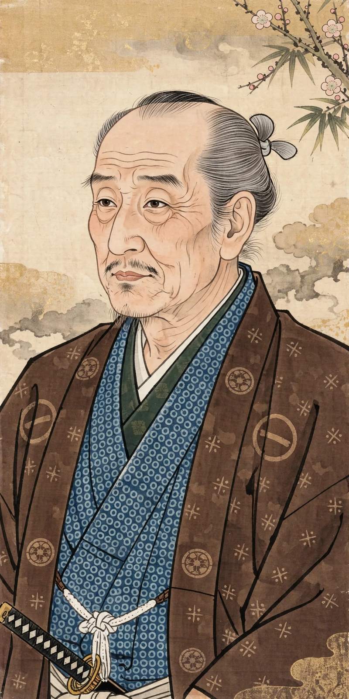

Chikamatsu Monzaemon (Japanese: 近松 門左衛門; 1653 – 6 January 1725), born Sugimori Nobumori, was a Japanese dramatist of kabuki and of jōruri, the puppet theatre that later became bunraku. Widely regarded as Japan's greatest dramatist — he has been called the "Shakespeare of Japan" — he wrote some 130 plays, including the history plays (jidaimono) such as The Battles of Coxinga and the domestic tragedies (sewamono) such as The Love Suicides at Sonezaki and The Love Suicides at Amijima, which dramatize the collision of duty (giri) and human feeling (ninjō).
| Chikamatsu Monzaemon | |
|---|---|
 Chikamatsu, portrait | |
| Born | 1653, Echizen Province, Japan |
| Died | 6 January 1725 (aged 71–72), Osaka, Japan |
| Occupation | Playwright |
| Forms | Jōruri (bunraku), kabuki |
| Notable works | The Love Suicides at Sonezaki; The Love Suicides at Amijima; The Battles of Coxinga |
Chikamatsu was born into a samurai family in Echizen; when his father lost his position, the family moved to Kyoto, where the young Nobumori served noble households and a temple, acquiring the classical and Buddhist learning that fills his plays. He published a volume of haiku and began writing for the theatre in the 1680s, supplying kabuki scripts in Kyoto — including plays for the great actor Sakata Tōjūrō — before settling in Osaka as resident playwright for the chanter Takemoto Gidayū's Takemoto-za puppet theatre. There he elevated jōruri from musical narrative to full drama.
In 1703 Chikamatsu dramatized a real event — the double suicide of a soy-sauce merchant's clerk, Tokubei, and the courtesan Ohatsu — in The Love Suicides at Sonezaki. Its success invented the domestic tragedy: contemporary commoners, real money, real disgrace, and a final lyrical journey to death (michiyuki) in which the lovers' journey becomes poetry. The Love Suicides at Amijima (1721), often judged his masterpiece, follows the paper merchant Jihei, trapped between his wife Osan — who sacrifices everything to save him — and the courtesan Koharu; obligation and passion destroy all three. The plays are said to have inspired imitative suicides, leading the authorities to ban the staging of love-suicide plays in 1723.
His grand history plays clothe recent or foreign events in period dress. The Battles of Coxinga (1715), about the Ming loyalist Koxinga (based on Zheng Chenggong), ran for seventeen months and was one of the greatest hits of the Japanese stage. Chikamatsu's dramatic theory — recorded by a disciple — describes his art as lying "in the narrow margin between the real and the unreal", and his chanters' texts interweave narration and dialogue with a psychological depth unmatched in his time.
Chikamatsu's plays remain the core of the bunraku and kabuki repertoires. With the novelist Ihara Saigaku he defines the Genroku literary flowering of Osaka townsman culture. Modern revivals, films — including Double Suicide (1969), adapted from Amijima — and translations have sustained his reputation as Japan's supreme dramatist.
From Wikipedia, the free encyclopedia (recreated from memory).